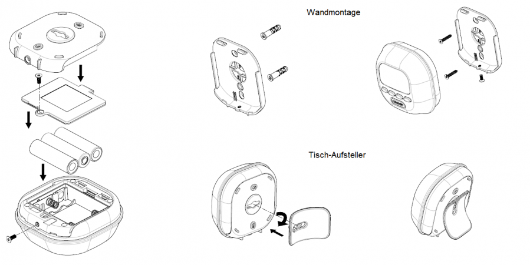
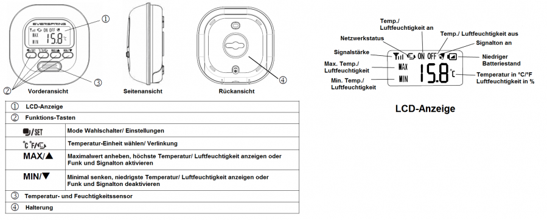
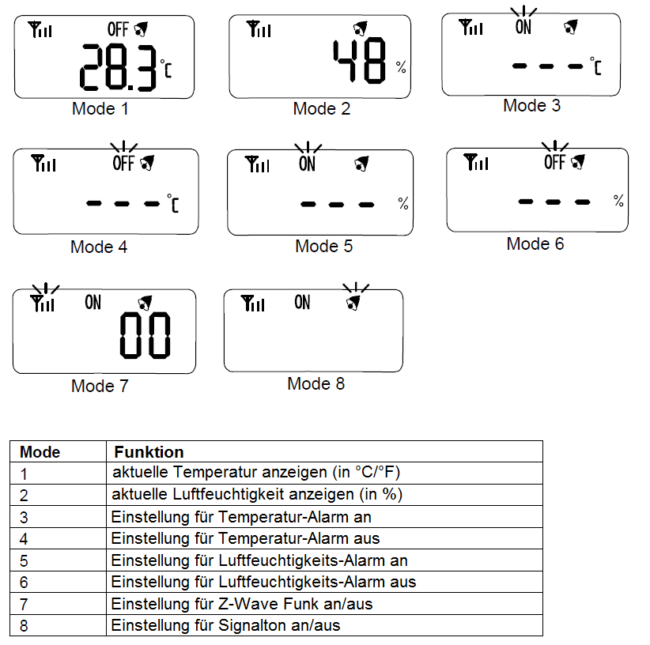

EVR_ST814
Firmware Version : 1.8 |
 |
Kurzinfo
SDieses Gerät ist ein Z-Wave Sensor. Drücken Sie zum Inkludieren, Exkludieren und Aufwecken des Gerätes dreimal schnell hintereinander die Verlinkungstaste (zweite von links) an der Forderseite des Gerätes.
Weitergehende Informationen finden sich in den jeweiligen Abschnitten dieses Handbuches.
Was ist Z-Wave?
Dieses Produkt entspricht dem Z-Wave-Standard. Z-Wave ist der internationale Funkstandard zur Kommunikation von Geräten im intelligenten Haus. Z-Wave-Geräte funken in Europa auf der Frequenz von 868.42 MHz.Z-Wave ermöglicht eine sichere und stabile Kommunikation indem jede Nachricht vom Empfänger rückbestätigt wird (Zweiwege-Kommunikation) und alle netzbetriebenen Geräte Nachrichten weiterleiten (Routing) können, wenn eine direkte Funkbeziehung zwischen Sender und Empfänger gestört ist.
Dank Z-Wave können Produkte unterschiedlicher Hersteller miteinander in einem Funknetz verwendet werden. Damit ist auch dieses Produkt mit beliebigen anderen Produkten anderer Hersteller in einem gemeinsamen Z-Wave Funknetz einsetzbar.
Z-Wave unterscheidet zwischen Controllern und Slaves. Slaves sind entweder Sensoren S, die Daten ermitteln oder Aktoren A, die Aktionen ausführen (Sensoren und Aktoren sind mitunter in einem Gerät vereint). Controller sind entweder statische netzgespeiste Controller C (auch IP-Gateways genannt) oder mobile batteriebetriebene Controller (Fernbedienungen, Batteriewandschalter)R. Damit ergeben sich eine Reihe prinzipieller Kommunikationsmöglichkeiten in einem Z-Wave-Netz:

- Controller steuern Aktoren.
- Aktoren melden Änderungen ihres Schaltzustandes
- Sensoren melden Messwerte oder Statusänderungen an Controller
- Sensoren steuern Aktoren direkt bei Ereignissen
- Aktoren steuern andere Aktoren
- Fernbedienungen erzeugen Ereignisse in einem statischen Controller, die zum Beispiel zum Steuern von Szenen genutzt werden
- Fernbedienungen steuern Aktoren
Controller können in einem Z-Wave Netzwerk zwei unterschiedliche Rollen einnehmen. Es gibt immer genau einen Primärcontroller der das Netzwerk steuert und Geräte in das Netzwerk inkludiert oder aus dem Netzwerk exkludiert. Dieser Controller kann weiter Nutzerfunktionen - zum Beispiel Tasten - besitzen. Alle anderen Controller mit Nutzerfunktionen erfüllen keine Managementaufgaben. Sie heißen Sekundärcontroller. Trotzdem verfügen sie - sozusagen als Backup - über alle notwendigen Informationen über das Netz. Das Übersichtsbild zeigt, das - batteriegestützt - Sensoren nicht direkt mit - batteriebetriebenen - Fernbedienungen kommunizieren. Sie senden nur Daten an statische Controller oder steuern Aktoren direkt.
Produktbeschreibung
Batterien
Dieses Gerät wird mit Batterien betrieben. Nur Batterien des angegebenen Typs verwenden. Niemals alte und neue Batterien im gleichen Gerät vermischen. Gebrauchte Batterien enthalten gefährliche Stoffe und dürfen nicht mit dem Hausmüll entsorgt werden!
Batterietyp: 3 * AA
Installationsanleitung

Das Gerät kann an der Wand montiert oder frei auf einem Tisch aufgestellt werden.
1. Lösen Sie die Verriegelungsschrauben an der Rückseite des Gerätes und entfernen Sie die Wandhalterung sowie die Batterieabdeckung.
2. Legen Sie die 3 * AA 1.5V Batterien, wie auf der Abbildung zu sehen, in das Batteriefach ein.
3. Für die Wandmontage verwenden Sie die Befestigungsplatte und die mitgelieferten Schrauben.
4. Schließen Sie Batteriefach und Wandhalterung wieder mit den Verriegelungsschrauben.
5. Für das Aufstellen auf einem Tisch arretieren Sie den mitgelieferten Standfuß, indem Sie diesen um 90 Grad in Uhrzeigerrichtung drehen.
6. Ist der Standfuß hörbar eingerastet, könne Sie das Gerät an einem beliebigen Platz aufstellen.
Verhalten des Gerätes im Z-Wave Netz
I Im Auslieferungszustand ist das Gerät mit keinem Z-Wave-Netz verbunden. Damit es mit anderen Z-Wave Geräten kommunizieren kann, muss es in ein bestehendes Z-Wave Netz eingebunden werden. Dieser Prozess wird bei Z-Wave Inklusion genannt. Geräte können Netzwerke auch wieder verlassen. Dieser Prozess heißt bei Z-Wave Exklusion. Beide Prozesse werden von einem Controller gestartet, der dazu in einen Inklusion- bzw. Exklusion-Modus geschaltet werden muss. Das Handbuch des Controllers enthält Informationen, wie er in diese Modi zu schalten ist. Erst wenn der Controller des Z-Wave Netzes im Inclusion-Modus ist, können Geräte hinzugefügt werden. Das Verlassen des Netzes durch Exklusion führt zum Rücksetzen dieses Gerätes in den Auslieferungszustand.
Bringen Sie den Controller in den Inklusion-/Exklusion-Modus. Drücken Sie zum Bestätigen des Inklusion-/ Exklusion-Prozesses dreimal schnell hintereinander die Verlinkungstaste an der Forderseite des Gerätes.
Bedienung des Gerätes

Sie können an Ihrem Gerät zwischen 8 verschiedenen Modi wählen. Die einzelnen Modi müssen unterschiedlich konfiguriert werden.

MODE 1 und MODE 2 zeigen Temperatur bzw. Luftfeuchtigkeit an. Nach dem Beenden der Einstellungen (MODE 3 und MODE 8) kehrt das Gerät nach 12 Sekunden automatisch oder durch Drücken der Verlinkungstaste auf den Ausgangsbildschirm zurück.
1. Temperatur
1.1 Aktuelle Temperatur anzeigen
Drücken Sie die den Mode Wahlschalter und wählen MODE 1, um die aktuelle Temperatur anzeigen zu lassen. Mit dem Schalter Temperatureinheit wählen können Sie die Anzeigeeinheit bestimmen (°C oder °F).
Der Anzeigebereich geht von -20°C bis 50°C. Um den letzten Maximal- oder Minimalwert aufzurufen, drücken Sie die Max. bzw. Min. Taste. Um den jeweiligen Wert zu löschen, drücken sie Max. und Min. gleichzeitig.
Grenzwert Warnung:
Wenn die Temperatur einen Grenzwert erreicht, wird das entspechende Zeichen MIN oder MAX angezeigt.
Frost Warnung:
Wenn die Temperatur auf 0°C fällt, wird die Temperaturanzeige beleuchtet und ein Signalton ertönt. Drücken Sie eine beliebige Taste, um den Signalton zu beenden.
1.2 Temperatur Warnung-AN
Drücken Sie die den Mode Wahlschalter und wählen MODE 3, um in die Einstellungen für den Mode Temperatur Warnung-AN zu gelangen. Auf der Anzeige wird die eingestellte Warn-Temperatur angezeigt. Ist keine Temperatur eingestellt, wird " - - -°C " angezeigt.
Um den Wert für die Warnung eizustellen, drücken Sie den Mode Wahlschalter für 5 Sekunden, bis ein langer Signalton ertönt. In der Anzeige beginnt "- - -" zu blinken. Drücken Sie Min. oder Max., um den gewünschten Temperaturwert einzustellen (zwischen -20°C und 50°C). Haben sie den gewünschten Wert erreicht, drücken Sie zur Bestätigung den Mode Wahlschalter oder zum Verwerfen die Verlinkungstaste.
Um den festgelegten Wert zu löschen, drücken Sie die gleichzeitig die Min. und Max. Taste, bis ein langer Signalton ertönt.
Wenn die Temperatur den eingestellten Grenzwert erreicht, sendet das Gerät ein Z-Wave Signal. Die Anzeige geht zurück auf MODE 1, das Zeichen "ON" wird mit Hintergrundbeleuchtung angezeigt, und es ertönt ein Signalton. Drücken Sie eine beliebige Taste, um den Signalton zu beenden.
1.3 Temperatur Warnung-AUS
Drücken Sie die den Mode Wahlschalter und wählen MODE 4, um in die Einstellungen für den Mode Temperatur Warnung-AUS zu gelangen. Auf der Anzeige wird die eingestellte Warn-Temperatur angezeigt. Ist keine Temperatur eingestellt, wird " - - -°C " angezeigt.
Um den Wert für die Warnung eizustellen, drücken Sie den Mode Wahlschalter für 5 Sekunden, bis ein langer Signalton ertönt. In der Anzeige beginnt "- - -" zu blinken. Drücken Sie Min. oder Max., um den gewünschten Temperaturwert einzustellen (zwischen -20°C und 50°C). Haben sie den gewünschten Wert erreicht, drücken Sie zur Bestätigung den Mode Wahlschalter oder zum Verwerfen die Verlinkungstaste.
Um den festgelegten Wert zu löschen, drücken Sie die gleichzeitig die Min. und Max. Taste, bis ein langer Signalton ertönt.
Wenn die Temperatur den eingestellten Grenzwert erreicht, sendet das Gerät ein Z-Wave Signal. Die Anzeige geht zurück auf MODE 1, das Zeichen "OFF" wird mit Hintergrundbeleuchtung angezeigt, und es ertönt ein Signalton. Drücken Sie eine beliebige Taste, um den Signalton zu beenden.
Beachte:
Die beiden Werte für Temperatur Warnung-AN und Warnung-AUS dürfen nicht gleich sein; sie müssen mindestens 2°C auseinander liegen. Ist der Wert für Temperatur Warnung-AUS beispielsweise auf 20°C eingestellt, kann der Wert für Temperatur Warnung-AN nur kleiner 18°C oder größer 22°C sein (Werte zwischen 18°C und 22°C können nicht gesetzt werden).
Wird der Alarm beim Erreichen eines Grenzwertes ausgelöst, muss die Temperatur um mindestens 2°C sinken oder ansteigen, damit der Alarm erneut ausgelöst wird. Wird ein Alarm beispielsweise bei 20°C ausgelöst, muss sich die Temperatur mindestens auf über 22°C oder unter 18°C ändern, damit der Alarm erneut ausgelöst wird.
2. Luftfeuchtigkeit
2.1 Aktuelle Luftfeuchtigkeit anzeigen
Drücken Sie die den Mode Wahlschalter und wählen MODE 2, um die aktuelle Luftfeuchtigkeit anzeigen zu lassen.
Der Anzeigebereich geht von 20% RH bis 90% RH. Um den letzten Maximal- oder Minimalwert aufzurufen, drücken Sie die Max. bzw. Min. Taste. Um den jeweiligen Wert zu löschen, drücken sie Max. und Min. gleichzeitig.
Grenzwert Warnung:
Wenn die Luftfeuchtigkeit den eingestellten Grenzwert erreicht, wird das entspechende Zeichen MIN oder MAX angezeigt.
2.2 Luftfeuchtigkeitswarnung-AN
Drücken Sie die den Mode Wahlschalter und wählen MODE 5, um in die Einstellungen für den Mode Luftfeuchtigkeit Warnung-AN zu gelangen. Auf der Anzeige wird die eingestellte Warn-Luftfeuchtigkeit angezeigt. Ist kein Wert eingestellt, wird " - - -%" angezeigt.
Um den Wert für die Warnung eizustellen, drücken Sie den Mode Wahlschalter für 5 Sekunden, bis ein langer Signalton ertönt. In der Anzeige beginnt "- - -" zu blinken. Drücken Sie Min. oder Max., um den gewünschten Luftfeuchtigkeitswert einzustellen (zwischen 20%RH und 90%RH). Haben sie den gewünschten Wert erreicht, drücken Sie zur Bestätigung den Mode Wahlschalter oder zum Verwerfen die Verlinkungstaste.
Um den festgelegten Wert zu löschen, drücken Sie die gleichzeitig die Min. und Max. Taste, bis ein langer Signalton ertönt.
Wenn die Luftfeuchtigkeit den eingestellten Grenzwert erreicht, sendet das Gerät ein Z-Wave Signal. Die Anzeige geht zurück auf MODE 2, das Zeichen "ON" wird mit Hintergrundbeleuchtung angezeigt, und es ertönt ein Signalton. Drücken Sie eine beliebige Taste, um den Signalton zu beenden.
2.3 Luftfeuchtigkeitswarnung-AUS
Drücken Sie die den Mode Wahlschalter und wählen MODE 6, um in die Einstellungen für den Mode Luftfeuchtigkeit Warnung-AUS zu gelangen. Auf der Anzeige wird die eingestellte Warn-Luftfeuchtigkeit angezeigt. Ist kein Wert eingestellt, wird " - - -%" angezeigt.
Um den Wert für die Warnung eizustellen, drücken Sie den Mode Wahlschalter für 5 Sekunden, bis ein langer Signalton ertönt. In der Anzeige beginnt "- - -" zu blinken. Drücken Sie Min. oder Max., um den gewünschten Luftfeuchtigkeitswert einzustellen (zwischen 20%RH und 90%RH). Haben sie den gewünschten Wert erreicht, drücken Sie zur Bestätigung den Mode Wahlschalter oder zum Verwerfen die Verlinkungstaste.
Um den festgelegten Wert zu löschen, drücken Sie die gleichzeitig die Min. und Max. Taste, bis ein langer Signalton ertönt.
Wenn die Luftfeuchtigkeit den eingestellten Grenzwert erreicht, sendet das Gerät ein Z-Wave Signal. Die Anzeige geht zurück auf MODE 2, das Zeichen "OFF" wird mit Hintergrundbeleuchtung angezeigt, und es ertönt ein Signalton. Drücken Sie eine beliebige Taste, um den Signalton zu beenden.
Beachte:
Die beiden Grenzwerte für Luftfeuchtigkeit Warnung-AN und Warnung-AUS dürfen nicht gleich sein; sie müssen mindestens 5% auseinander liegen. Ist der Wert für Luftfeuchtigkeit Warnung-AUS beispielsweise auf 50% eingestellt, kann der Wert für Luftfeuchtigkeit Warnung-AN nur kleiner 45% oder größer 55% sein (Werte zwischen 45% und 55% können nicht gesetzt werden).
Wird der Alarm beim Erreichen eines Grenzwertes ausgelöst, muss die Luftfeuchtigkeit um mindestens 5°C sinken oder ansteigen, damit der Alarm erneut ausgelöst wird. Wird ein Alarm beispielsweise bei 50% ausgelöst, muss sich die Luftfeuchtigkeit mindestens auf über 55% oder unter 45% ändern, damit der Alarm erneut ausgelöst wird.
3. Z-Wave Funktionen
Diese Funktion ermöglicht das Aktivieren oder Deaktivieren von Z-Wave Kommandos, um assoziierte Geräte bei Alarm steuern zu können.
Drücken Sie die den Mode Wahlschalter und wählen MODE 7, um in die Einstellungen für Z-Wave zu gelangen. Der eingestellte Status ist in der Anzeige zu sehen. Mit Max. kann die Funktion aktiviert und mit Min. deaktiviert werden.
3.1 Z-Wave Konfigurieren
Z-Wave Gruppen (Assoziations-Kommandoklassen Version 2)
Das Gerät kann Statusmeldungen oder Steuersignale an andere Z-Wave Geräte senden. Es unterstützt zwei Assoziationsgruppen. Die Gruppe 1 unterstützt dabei ein Gerät, Gruppe 2 bis zu drei Geräte.
Gruppe 1 unterstützt die Kommandoklassen POWER_APPLIED, SENSOR_MULTILEVEL _REPORT, ALARM_REPORT und BATTERY_REPORT_COMMAND, Gruppe 2 die Klasse BASIC_SET.
Gruppe 1
POWER_APPLIED
Immer wenn das Gerät mit Strom versorgt wird (Einlegen der Batterien), sendet es an das assoziierte Gerät der Gruppe 1 einen Report.
MULTILEVEL_SENSOR_REPORT
Das Gerät sendet die mit SENSOR_MULTILEVEL_REPORT die aktuell gemessene Temperatur und Luftfeuchtigkeit an das assoziierte Gerät der Gruppe 1. Die genauen Einstellungen zum automatischen Report werden an anderer Stelle im Handbuch genauer beschrieben.
Niedriger Batteriestand
Wenn der Batteriestand unter einen bestimmten Wert fällt, wird das Batterie-Symbol im Display des Gerätes angezeigt und ein Batterie-Alarm wird an das assoziierte Gerät der Gruppe 1 gesendet.
Gruppe 2 (bis zu 3 Geräte)
Wenn ein Temperatur- oder Feuchtigkeitsalarm ausgelöst wird, sendet das Gerät ein Schaltsignal (BASIC_SET_COMMAND) an alle assoziierten Geräte der Gruppe 2.
In der unten stehenden Tabelle werden die Einstellungen zum BASIC_SET_COMMAND genauer aufgeführt.
Beachte:
Wenn die Z-Wave Funktion deaktiviert ist, wird kein Temeperatur- oder Luftfeuchtigkeitsalarm an ein anderes Gerät gemeldet. Wenn die Z-Wave Funktion aktiviert ist, werden die Alarme an alle assoziierten Geräte der Gruppe 2 gesendet.
Wenn im Z-Wave Mode (MODE 7) "00" auf der Anzeige erscheint, ist kein Z-Wave Controller mit ihm verbunden. Inkludieren Sie das Gerät in ein Z-Wave Netzwerk, wie im Abschnitt "Inklusion" beschrieben.
4. Signalton (Beep Tone)
Drücken Sie die den Mode Wahlschalter und wählen MODE 8, um in die Einstellungen für den Signalton zu gelangen. Mit Max. kann die Funktion aktiviert und mit Min. deaktiviert werden. Wenn der Signalton aktiviert ist, ist bei jedem Tastendruck am Gerät Signalton zu hören. Wenn ein Alarm durch einen der Sensoren ausgelöst wird, ist ein viermaliger Piepton zu hören.
Kommunikation mit einem batteriebetriebenen Gerät
W Das Gerät ist batteriegespeist und damit in der Regel in einem Tiefschlafmodus um Strom zu sparen. Im Tiefschlafmodus kann das Gerät keine Funksignale empfangen. Daher wird ein (statischer) Controller benötigt, der netzgespeist und damit immer funkaktiv ist. Dieser Controller - zum Beispiel ein IP-Gateway - verwaltet eine Nachrichten-Mailbox für dieses batteriegespeiste Gerät, in dem Nachrichten an dieses Gerät zwischengespeichert werden. Ohne einen solchen statischen Controller wird die Nutzung dieses batteriebetriebenen Gerätes sehr schnell zur Entladung der Batterie führen oder die Nutzung ist komplett unmöglich.
Dieses Gerät weckt regelmäßig auf, meldet dies durch Aussenden einer sogenannten Wakeup-Notifikation und leert dann seine Mailbox im statischen Controller. Dafür muss bei der Inclusion die Node-ID des Controllers und ein Aufweckinterval definiert werden. Erfolgt die Inklusion durch einen statischen Controller wie zum Beispiel ein IP-Gateway, wird dieser Controller diese Konfiguration automatisch erledigen und in der Regel eine Nutzerschnittstelle anbieten, um das Aufweckinterval den Nutzerbedürfnissen anzupassen. Das Aufweckinterval ist ein Kompromiss zwischen maximaler Batterielaufzeit und minimaler Reaktionszeit des batteriegespeisten Gerätes.
Durch dreimaliges schnelles Drücken der Verlinkungstaste an der Forderseite des Gerätes oder das Aktivieren eines Alarms wird das Gerät aufgeweckt und kann Netzwerkbefehle erhalten.
Es ist möglich die Gerätenummer 255 als Zielgerät für die Wakeup-Notifikation anzugeben. In diesem Falle wird die Nachricht als Broadcast an alle Geräte mit direkter Funkverbindung gesendet. Dem Vorteil der sofortigen Benachrichtigung steht als Nachteil gegenüber, das das Gerät gegebenenfalls mehr Zeit im aktiven Modus und damit mehr Batterieladekapazität verbraucht.
Node Information Frame
NIF Der Node Information Frame ist die Visitenkarte eines Z-Wave Gerätes. Es ist ein spezielles Datenpaket, in dem der Gerätetyp sowie die Funktionen des Gerätes bekanntgemacht werden. Inklusion und Exklusion eines Gerätes wird von diesem mit einem Node Information Frame beantwortet. Zusätzlich kann der Node Information Frame für bestimmte Konfigurationsprozesse des Z-Wave Netzes - zum Beispiel das Setzen von Assoziationen - benötigt werden.
Durch dreimaliges schnelles Drücken der Verlinkungstaste an der Forderseite des Gerätes oder das Aktivieren eines Alarms wird das Gerät aufgeweckt und kann Netzwerkbefehle erhalten.
Assoziationen - wie werden andere Geräte gesteuert?
A Z-Wave Geräte können andere Geräte direkt steuern. Diese direkte Steuerung heißt in Z-Wave Assoziation. In den steuernden Geräten muss dazu die Geräte-ID des zu steuernden Gerätes hinterlegt werden. Dies erfolgt in sogenannten Assoziationsgruppen. Eine Assoziationsgruppe ist immer an ein Ereignis im steuernden Gerät gebunden (Tastendruck oder Auslösen eines Sensors). Bei Eintritt dieses Ereignisses wird an alle in einer Assoziationsgruppe hinterlegten Geräte ein Steuerkommando gesendet.
Assoziationsgruppen:
| 1 | Battery Status und Sensor Report (max. Anzahl Geräte: 1) |
| 2 | Sensor Sendet Alarm Meldung (max. Anzahl Geräte: 3) |
Konfigurationseinstellungen
Z-Wave Produkte können direkt nach der Inklusion im Netz verwendet werden. Durch Konfigurationseinstellungen kann das Verhalten des Gerätes jedoch noch besser an die Anforderungen der Anwendung angepasst und zusätzliche Funktionen aktiviert werden.
WICHTIG: Manche Steuerungen erlauben nur die Konfiguration von vorzeichenbehafteten Werten zwischen -128 und 127. Um erforderliche Werte zwischen 128 und 255 zu programmieren, muss der gewünschte Wert minus 256 eingegeben werden. Beispiel: um einen Parameter auf einen Wert von 200 zu setzen, müsste der Wert 200-256 = -56 eingegeben werden, wenn nur positive Werte bis 128 akzeptiert werden. Bei Werten von 2 Byte Länge wird die gleiche Logik angewandt: Werte über 32768 werden als negative Werte angegeben
| Wert | Beschreibung |
|---|---|
| 0 | |
| 1 — 99 | (Voreingestellt 99) |
| Wert | Beschreibung |
|---|---|
| 236 — 255 | |
| 0 — 50 | |
| 99 | (Voreingestellt) |
| Wert | Beschreibung |
|---|---|
| 236 — 255 | |
| 0 — 50 | |
| 99 | (Voreingestellt) |
| Wert | Beschreibung |
|---|---|
| 20 — 90 | |
| 99 | (Voreingestellt) |
| Wert | Beschreibung |
|---|---|
| 20 — 90 | |
| 99 | (Voreingestellt) |
| Wert | Beschreibung |
|---|---|
| 0 | (Voreingestellt) |
| 1 — 1439 |
| Wert | Beschreibung |
|---|---|
| 0 | (Voreingestellt) |
| 1 — 70 |
| Wert | Beschreibung |
|---|---|
| 0 | (Voreingestellt) |
| 5 — 70 |
Kommandoklassen
Unterstützte Kommandoklassen- Basic (Version 1)
- Multi Channel (Version 2)
- Wake Up (Version 2)
- Association (Version 2)
- Version (Version 1)
- Battery (Version 1)
- Configuration (Version 1)
- Multilevel Sensor (Version 2)
- Manufacturer Specific (Version 1)
Technische Daten
| Batterietyp | 3 * AA |
| Explorer Frames | Nein |
| SDK | |
| Geräteart | Slave with routing capabilities |
| Allgemeiner Z-Wave-Gerätetyp | Multilevel Sensor |
| Spezieller Z-Wave-Gerätetyp | Routing Multilevel Sensor |
| Router | Nein |
| FLiRS | Nein |
| Firmware Version | 1.8 |
Erläuterung Z-Wave-spezifischer Begriffe
- Controller... ist ein Z-Wave-Gerät mit erweiterten Fähigkeiten zur Verwaltung eines Netzes. Dies sind in der Regel Gateways oder Fernbedienungen. Batteriegespeiste Wandschalter können auch Controller sein.
- Slave... ist ein Z-Wave-Gerät mit erweiterten Fähigkeiten zur Verwaltung eines Netzes. Es gibt Sensoren, Aktoren und auch Fernbedienungen als Slaves.
- Primärcontroller (engl. Primary Controller)... ist der zentrale Netzverwalter des Z-Wave-Netzes.
- Inklusion (eng. Inclusion)... ist der Prozess des Einbindens eines neuen Gerätes ins Z-Wave-Netz.
- Exklusion (engl. Exclusion)... ist der Prozess des Entfernens eines Gerätes aus dem Z-Wave-Netz.
- Assoziation (engl. Association)... ist eine Steuerbeziehung zwischen einem steuernden und einem gesteuerten Gerät. Die Information dazu wird im steuernden Gerät in einer Assoziationsgruppe hinterlegt.
- Wakeup Notifikation (engl. Wakeup Notification) ... ist eine spezielle Funknachricht, mit der ein batteriegespeistes Gerät bekanntmacht, daß es im Aufwachstatus ist und Z-Wave-Nachrichten empfangen kann.
- Node Information Frame... ist eine spezielle Funknachricht, mit der ein Z-Wave-Gerät seine Geräteeigenschaften bekanntgibt.
Entsorgungshinweis
Dieses Gerät enthält Batterien. Bitte beachten Sie die gültigen Entsorgungsvorschriften für Batterien.
Das ist ein elektrisches Gerät. Es kann kostenfrei bei entsprechenden Annahmestellen abgegeben werden.